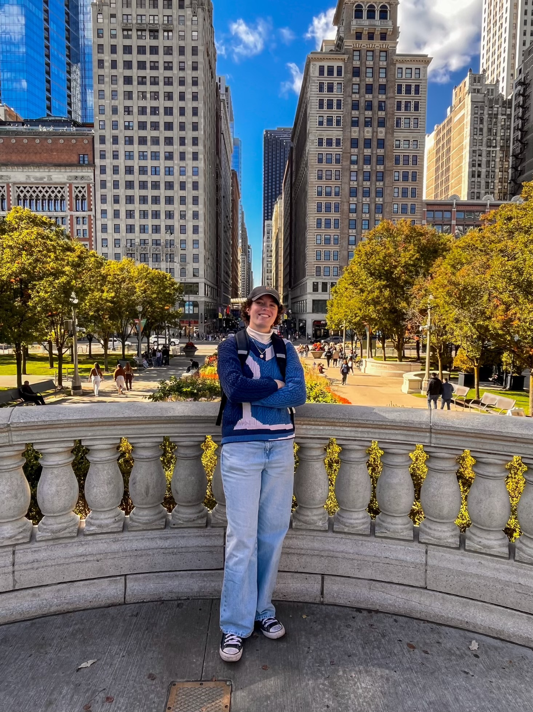

Future Coders Foundation was founded in 2024 by two university students studying computer science. We noticed that CS programs were getting more selective and the
job market was getting more competitive. Students who had access to programming resources early on are more likely to be successful in the field. While trying to find ways to support students in under-served communities
we noticed that many students didn't have access to basic technology required for computer programming. Our goal is to repurpose old laptops and donate them to students in need with the help of
local non-profits and schools.
Meet Our Founders!

Sinclair Hansen
My name is Sinclair Hansen and I am a computer science student studying at Schoolcraft College.
As a CS student, I've noticed the importance of having coding resources early on in education. The field can be quite
competitive, and having community support can help students improve their skills exponentially. That's my goal for
Future Coders Foundation, and I look forward to sharing a skill that I find very enjoyable with my community.